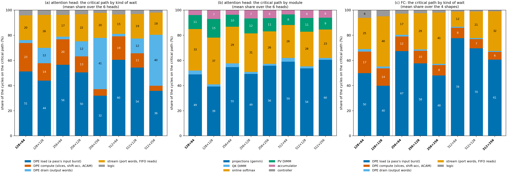

v3 DSE · VTR seeds 11, 13, 17 · 2026-10-16 · crossbar tiles 2026-10-22
NL-DPE Crossbar DSE
Which crossbar size, rows R × columns C, gives the lowest latency and area? Attention: 48 builds of one head (6 shapes × 8 configs), each placed and routed with three VTR seeds. FC: 32 rows of the v2 snapshot (4 shapes × 8 configs). Crossbar tiles by the row-parallel rule (2026-10-22; experiment.md §5.1): R data pins in and C out, the height from the pins (60 per tile row), the width from the logic plus COFFE's local input crossbar, every cell one CLB tile with its routing. One notation throughout: on each workload, a config's value is divided by the worst config's value, so the worst config scores 1 and lower is better; G is the geometric mean of those scores over a family's workloads, GA for area, GD for latency, GE for energy and GADP for area × latency. Per family the plot is GA against GD; across the families, each config's GADP in FC is x and in attention y. The Pareto front is the set of configs that no other config beats on both axes. GE is shown beside the fronts and is not part of them.
EDAP against ADP, per family
Each config's rank by ADP and by EDAP (1 = best), rows in ADP order. EDAP is energy × ADP, so energy alone moves a config between the two.
FC
| R × C | ADP rank | EDAP rank |
|---|---|---|
| 256 × 128 | 1 | 2 |
| 128 × 64 | 2 | 7 |
| 256 × 256 | 3 | 4 |
| 128 × 128 | 4 | 8 |
| 512 × 256 | 5 | 1 |
| 256 × 64 | 6 | 5 |
| 512 × 128 | 7 | 3 |
| 512 × 64 | 8 | 6 |
Attention head
| R × C | ADP rank | EDAP rank |
|---|---|---|
| 128 × 64 | 1 | 1 |
| 256 × 64 | 2 | 2 |
| 128 × 128 | 3 | 3 |
| 512 × 64 | 4 | 4 |
| 256 × 128 | 5 | 5 |
| 512 × 128 | 6 | 6 |
| 256 × 256 | 7 | 7 |
| 512 × 256 | 8 | 8 |
FC

| R × C | GA area | GD latency | GE energy | front |
|---|---|---|---|---|
| 512 × 256 | 0.464 | 0.992 | 0.366 | yes |
| 256 × 256 | 0.542 | 0.743 | 0.538 | yes |
| 256 × 128 | 0.560 | 0.630 | 0.500 | yes |
| 512 × 128 | 0.589 | 0.866 | 0.348 | |
| 256 × 64 | 0.777 | 0.597 | 0.576 | yes |
| 512 × 64 | 0.845 | 0.888 | 0.426 | |
| 128 × 128 | 0.858 | 0.507 | 0.924 | yes |
| 128 × 64 | 0.862 | 0.431 | 1.000 | yes |
Attention head

| R × C | GA area | GD latency | GE energy | front |
|---|---|---|---|---|
| 128 × 64 | 0.472 | 0.497 | 0.802 | yes |
| 256 × 64 | 0.505 | 0.561 | 0.838 | |
| 512 × 64 | 0.573 | 0.646 | 0.918 | |
| 128 × 128 | 0.621 | 0.573 | 0.828 | |
| 256 × 128 | 0.645 | 0.615 | 0.863 | |
| 512 × 128 | 0.745 | 0.740 | 0.946 | |
| 256 × 256 | 0.908 | 0.858 | 0.911 | |
| 512 × 256 | 1.000 | 0.983 | 1.000 |
Why attention and FC differ
FC rewards large crossbars: a larger array holds more weights per tile, so a layer needs fewer tiles and less area, at the cost of longer passes. Attention rewards small crossbars: its crossbar count is set by the mapping, not by the array size, and each crossbar works on an I × I window (I = min(R, C)). A larger array adds area, energy per pass and soft logic, but no useful work.
| R × C | FC crossbars | FC tile area | FC cycles | FC MHz | attention crossbars | attention CLB area | attention cycles | attention MHz |
|---|---|---|---|---|---|---|---|---|
| 128 × 64 | 30 | 96 % | 52 | 379 | 231 | 84 % | 12,218 | 130 |
| 256 × 64 | 15 | 92 % | 77 | 401 | 227 | 79 % | 14,436 | 131 |
| 512 × 64 | 8 | 88 % | 115 | 392 | 226 | 70 % | 17,700 | 130 |
| 128 × 128 | 15 | 97 % | 65 | 402 | 228 | 80 % | 12,338 | 124 |
| 256 × 128 | 8 | 95 % | 90 | 440 | 225 | 77 % | 13,727 | 126 |
| 512 × 128 | 4 | 94 % | 128 | 445 | 224 | 67 % | 16,991 | 120 |
| 256 × 256 | 4 | 95 % | 110 | 451 | 225 | 74 % | 16,833 | 114 |
| 512 × 256 | 2 | 94 % | 147 | 451 | 224 | 67 % | 20,097 | 114 |
Crossbars, cycles and MHz: means over each family's workloads. Area shares from the VPR counts, summarized as in the figures above: attention the geometric mean of each share over its shapes, FC the share of the area summed over its shapes.
Architecture. FC is a weight-stationary GEMV: the crossbars store the weights, 1 to 64 tiles per build. Attention multiplies activations by activations, so its crossbars act as EXP and LOG converters with identity weights on one I-wide window per pass. Their number follows the head dimension (78, 146 or 278–297 crossbars for d = 16, 32, 64) and hardly changes with the array size; at 512 × 64 only 12.5 % of a converter's cells are in use.
Area. FC area is crossbar tiles (88–97 %), and a larger tile stores a weight in less area (6× the grid area for 16× the cells), so FC area falls from 128 × 64 (GA 0.86) to 512 × 256 (0.46). Not at every step: at C = 64 and 128, R = 512 takes more area than R = 256 (GA 0.78 → 0.85 and 0.56 → 0.59): its 519 input pins make the tile 9 cells tall, its local input crossbar adds 41 % and 22 % to the logic, and the area then needs just over one or two columns, so the last column is mostly empty (62 % and 68 % of the tile used; the tile rule, experiment.md §5.1). Attention area is soft logic (67–84 % CLB: about 10.4k CLBs at C = 64, 12.9k at 128, 17.5k at 256), plus crossbar tiles (11–30 %) that grow with the array.
Latency. FC is one pass per tile, 52–147 cycles at 379–451 MHz. Attention takes 12k–20k cycles at 114–131 MHz. Its projections stream every token through one GEMM copy and end at n × max(⌈min(dmodel, R)/5⌉ + 8, ⌈8C/40⌉ + 1) cycles (the X load, or the drain of all C columns), which grows with R only while dmodel > R. The rest is bound by the score stream into the softmax (one 40-bit port, about n²/5 cycles), whatever the array size. Where the cycles go, exactly, is the critical-path section below: DPE compute is 4–23 % of them everywhere.
Energy. A crossbar pass fires the whole array (the cells, the ACAM on every column, the output buffer) and reads only the rows in use, so an attention pass costs 13.8 pJ at 128 × 64 and 70.7 pJ at 512 × 256 on average (the full array would be 14.8 and 74.9). FC needs fewer passes as the array grows (30 to 2), so its energy falls with size. Attention's pass count depends on I only (about 62k, 32k, 16k at I = 64, 128, 256), and the price still grows with R through the cells and the ACAM, so at a fixed I its energy rises with R.
Assumptions behind it. The fixed attention mapping (the crossbar count does not follow the array size), the pass price (the whole array fires; only the rows in use are read), one projection copy, the 40-bit ports in the cycles (the row-parallel tile of 2026-10-22 is in the area only), and FC as a single GEMV. Changing any of them could move the attention ranking.
Critical path: where the cycles go

Attention head: by kind, then by module
| R × C | cycles T | DPE load | DPE compute | DPE drain | stream | logic | gemm | qk | sm | pv | acc | ctrl |
|---|---|---|---|---|---|---|---|---|---|---|---|---|
| 128 × 64 | 8,410 | 51 % | 23 % | 2 % | 20 % | 4 % | 49 % | 3 % | 33 % | 11 % | 4 % | 0 % |
| 256 × 64 | 9,492 | 56 % | 20 % | 2 % | 17 % | 4 % | 55 % | 3 % | 29 % | 10 % | 4 % | 0 % |
| 512 × 64 | 10,871 | 60 % | 19 % | 2 % | 15 % | 4 % | 59 % | 3 % | 26 % | 8 % | 3 % | 0 % |
| 128 × 128 | 9,234 | 44 % | 14 % | 12 % | 26 % | 4 % | 39 % | 2 % | 37 % | 15 % | 7 % | 0 % |
| 256 × 128 | 10,062 | 50 % | 13 % | 12 % | 22 % | 3 % | 49 % | 2 % | 31 % | 12 % | 7 % | 0 % |
| 512 × 128 | 11,548 | 54 % | 11 % | 12 % | 19 % | 3 % | 54 % | 2 % | 28 % | 11 % | 6 % | 0 % |
| 256 × 256 | 12,747 | 32 % | 5 % | 41 % | 20 % | 2 % | 56 % | 1 % | 26 % | 11 % | 6 % | 0 % |
| 512 × 256 | 14,464 | 36 % | 4 % | 40 % | 18 % | 2 % | 60 % | 1 % | 23 % | 9 % | 6 % | 0 % |
FC: by kind
| R × C | cycles T | DPE load | DPE compute | DPE drain | stream | logic |
|---|---|---|---|---|---|---|
| 128 × 64 | 52 | 50 % | 17 % | 2 % | 25 % | 6 % |
| 256 × 64 | 77 | 67 % | 12 % | 1 % | 17 % | 3 % |
| 512 × 64 | 112 | 78 % | 8 % | 1 % | 12 % | 1 % |
| 128 × 128 | 65 | 40 % | 14 % | 2 % | 40 % | 5 % |
| 256 × 128 | 90 | 58 % | 10 % | 1 % | 29 % | 2 % |
| 512 × 128 | 125 | 70 % | 7 % | 1 % | 21 % | 1 % |
| 256 × 256 | 109 | 48 % | 8 % | 1 % | 41 % | 2 % |
| 512 × 256 | 146 | 61 % | 6 % | 1 % | 32 % | 1 % |
Reading. DPE compute is 4–23 % of an attention head's cycles and never separates the configs. At C = 64 the path is the DPE load (51–60 %) plus the score words streaming into the online softmax (15–20 %): more rows add load and nothing else, so down each C block only the load grows. At C = 256 the drain leads: a projection pass drains all 256 columns in 53 cycles, longer than the load of the four shapes with dmodel ≤ 192 (at most 47), so the drain holds 40–41 % of the path and the load 32–36 %; the two dmodel = 768 shapes stay load-bound. By module, the projections hold 39–60 % of the path and the softmax 23–37 %. FC is one pass per row: the load 40–78 %, the output words 12–41 %, compute 6–17 %.
A cycle that two inputs set together is charged to the first the model names (a tie). Where a stream feeds a crossbar directly (a GEMM's output into a DIMM converter) the chain records the crossbar's load, not the producer's words; the X bus's words are the projection crossbar's load. Per build: v3/dse/results/critical_path.json; the config tables: v3/dse/results/attn_config_table.md.
Across the families: area-delay product

| # | R × C | FC GADP | attention GADP | d | FC GE | attention GE | front |
|---|---|---|---|---|---|---|---|
| 1 | 128 × 64 | 0.483 | 0.239 | 0.539 | 1.000 | 0.802 | yes |
| 2 | 256 × 128 | 0.458 | 0.404 | 0.611 | 0.500 | 0.863 | yes |
| 3 | 256 × 64 | 0.602 | 0.288 | 0.667 | 0.576 | 0.838 | |
| 4 | 128 × 128 | 0.564 | 0.362 | 0.670 | 0.924 | 0.828 | |
| 5 | 512 × 128 | 0.663 | 0.561 | 0.869 | 0.348 | 0.946 | |
| 6 | 256 × 256 | 0.524 | 0.793 | 0.950 | 0.538 | 0.911 | |
| 7 | 512 × 64 | 0.975 | 0.376 | 1.045 | 0.426 | 0.918 | |
| 8 | 512 × 256 | 0.597 | 1.000 | 1.165 | 0.366 | 1.000 |
Latency = cycles ÷ Fmax, with Fmax the mean of the three VTR seeds; area counts CLBs, crossbar tiles and memory blocks from VPR. The 12 attention builds of the d = 64 shapes at C = 64 use VPR's own memory count, 5–8 blocks above the simulator's prediction.
The three panels side by side (for a paper): v3/dse/results/adp/dse_la.pdf. Scores: v3/dse/results/adp/latency_area.json. The earlier EDAP rankings stay in v3/dse/results/edap/ranking_*.json.